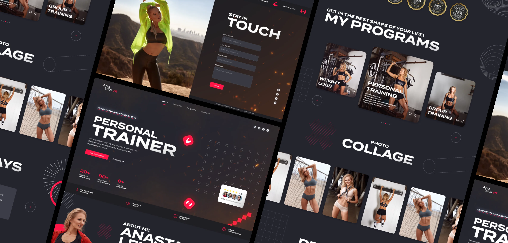
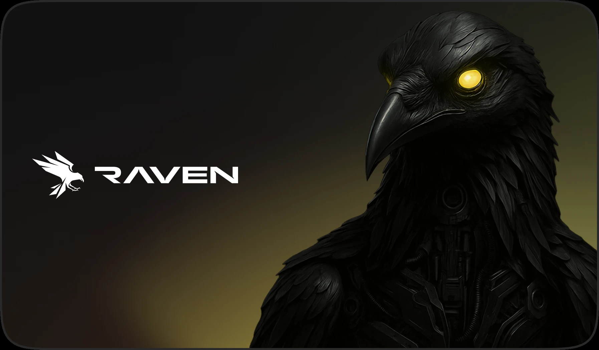
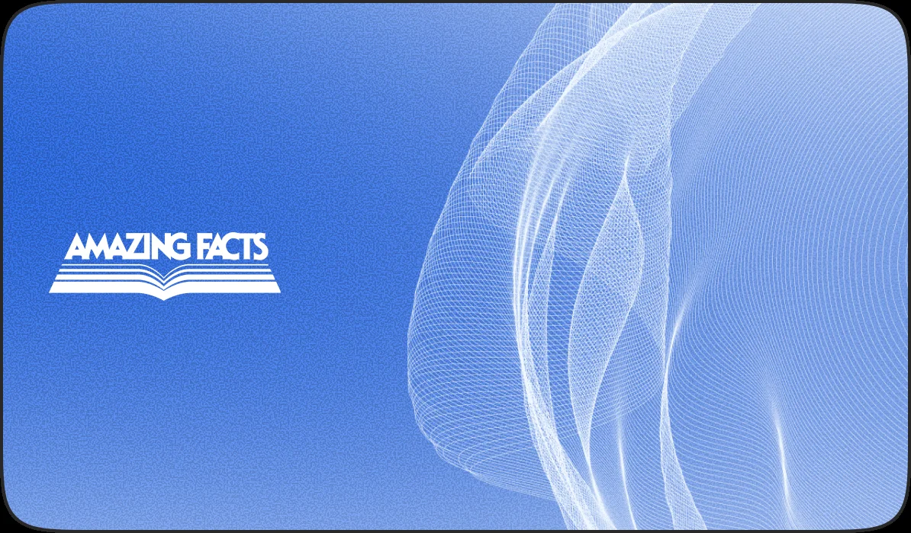
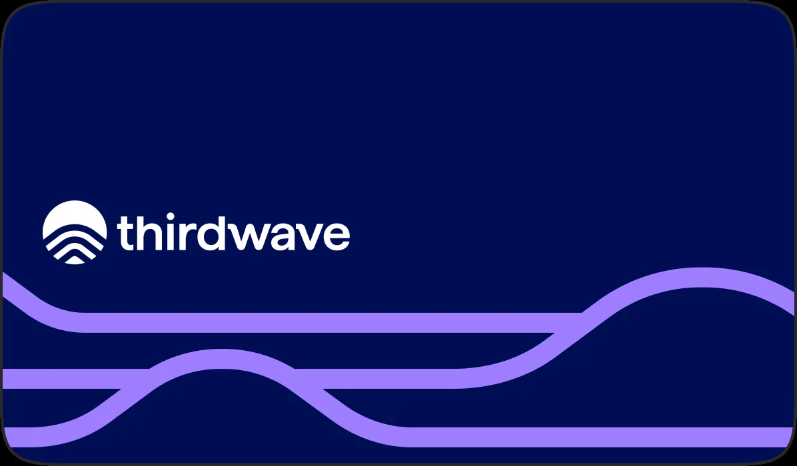

This project focused on designing a landing page for a personal fitness trainer whose primary goal was converting visitors into paying clients.
Unlike traditional portfolio websites, the experience needed to establish credibility within seconds, communicate expertise, and guide users naturally toward booking a consultation or purchasing a training program.
The design balances bold visual branding with structured content, ensuring every section builds confidence before presenting a call-to-action.
Visitors make decisions quickly when choosing a personal trainer.
The website needed to answer the most important questions immediately:
The challenge was creating a page that feels energetic and motivational without becoming visually overwhelming.
Product & UI/UX Designer
Rather than treating the page as a traditional website, I designed it as a conversion funnel.
Each section answers the visitor’s next question before introducing the next call-to-action:
This creates a natural progression that minimizes hesitation and encourages users to take action.
Structured the landing page to support decision-making instead of simply presenting content.
The experience progressively introduces the trainer, certifications, training programs, testimonials, and contact information in an order that builds confidence over time.
Developed a visual identity that reflects energy, discipline, and professionalism.
The bold typography, strong contrast, and dynamic imagery reinforce the trainer’s personality while making the brand instantly recognizable.
Used photography as the primary storytelling element.
Rather than relying on lengthy descriptions, the page demonstrates expertise through real imagery, training environments, transformation-focused messaging, and an authentic personal presence.
Designed every section around reducing friction and increasing user confidence.
Key conversion elements include:
Each component works together to guide visitors toward taking action.
This makes future campaign pages easy to build while keeping the visual identity consistent.
Designing for personal brands is fundamentally different from designing for software products.
Users aren’t evaluating features—they’re evaluating a person.
Every visual decision, content block, and interaction contributes to one question:
“Would I trust this person enough to work with them?”
Building that trust through thoughtful UX, visual hierarchy, and storytelling is what turns a landing page into a conversion tool.

Marketing Website for a Runtime Application Security Platform

Reimagining Bible Study as an AI Conversation

Turning Blockchain Data Into Product Intelligence